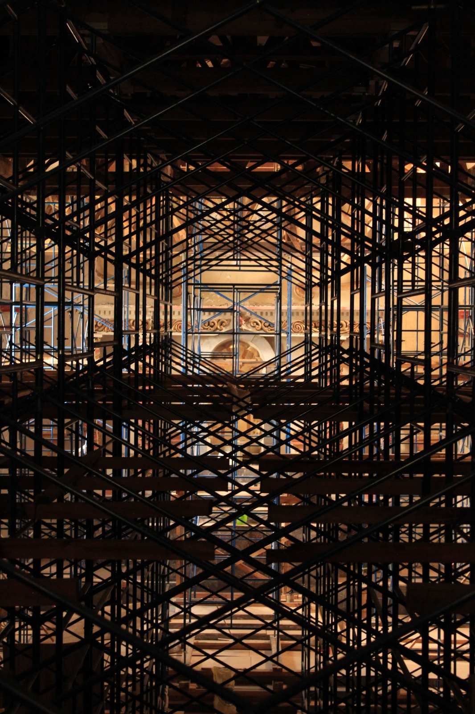

Vista desde el coro alto
La mirada de los frailes hacia el corazón del templo
Desde el coro alto se contempla la nave principal y, al fondo, el presbiterio. Esta vista permite comprender mejor la organización del templo y la relación entre el espacio destinado a la oración de los frailes y el lugar donde se celebraba la Eucaristía.
El coro ocupaba una posición elevada porque desde allí la comunidad religiosa podía participar en distintos momentos de la oración litúrgica. La mirada se dirigía naturalmente hacia el altar, centro de la celebración y signo de Cristo presente en medio de su pueblo.
Para el fraile dominico, la oración no estaba separada de su misión. Desde este lugar elevaba su alabanza a Dios y se preparaba para salir después al encuentro de los fieles mediante la predicación, el estudio y el servicio pastoral.
La vista desde el coro después del sismo

Vista desde el coro alto durante los trabajos de restauración posteriores al sismo de 2017.